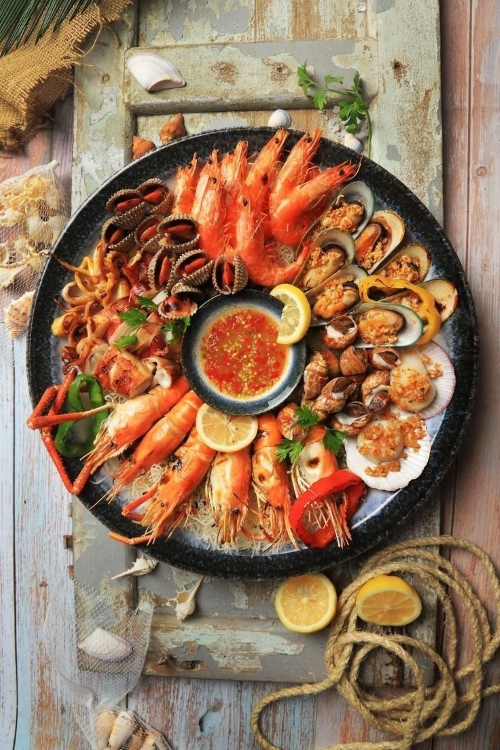
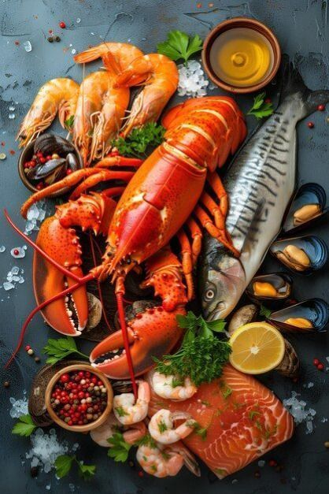

Seafood Bowl

Huge Lobster
🐟 Types of Seafood
- Fish (salmon, tuna, cod, mackerel)
- Shellfish (shrimp, crab, lobster)
- Mollusks (clams, mussels, oysters, scallops)
- Cephalopods (squid, octopus)
🍳 Popular Cooking Methods
- Grilling
- Steaming
- Boiling
- Frying
- Baking
- Served raw (sashimi or ceviche)
🌍 Famous Seafood Dishes Around the World
- Sushi & Sashimi (Japan)
- Paella (Spain)
- Clam Chowder (USA)
- Chili Crab (Singapore)
- Bouillabaisse (France)
- Fish and Chips (UK)
Reference Links:
Seafood Bowl
Huge Lobster